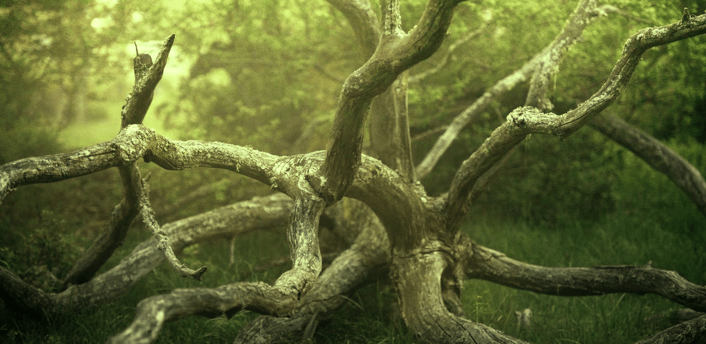

Välkommen till Tilda's Bilder
I detta arbete har jag jobbat med bildredigering i programmet Photopea. Syftet med denna uppgift var att förstå grundläggande begrepp gällande digital bildbehandling och lära sig grunderna i bild behandling och kunna implementera dom praktiskt.